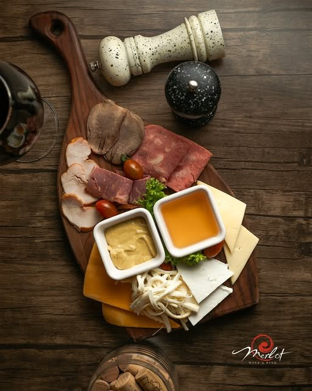
01Pendir və ət tabağı
Pendir çeşidi, dilimlənmiş ət, iki sous
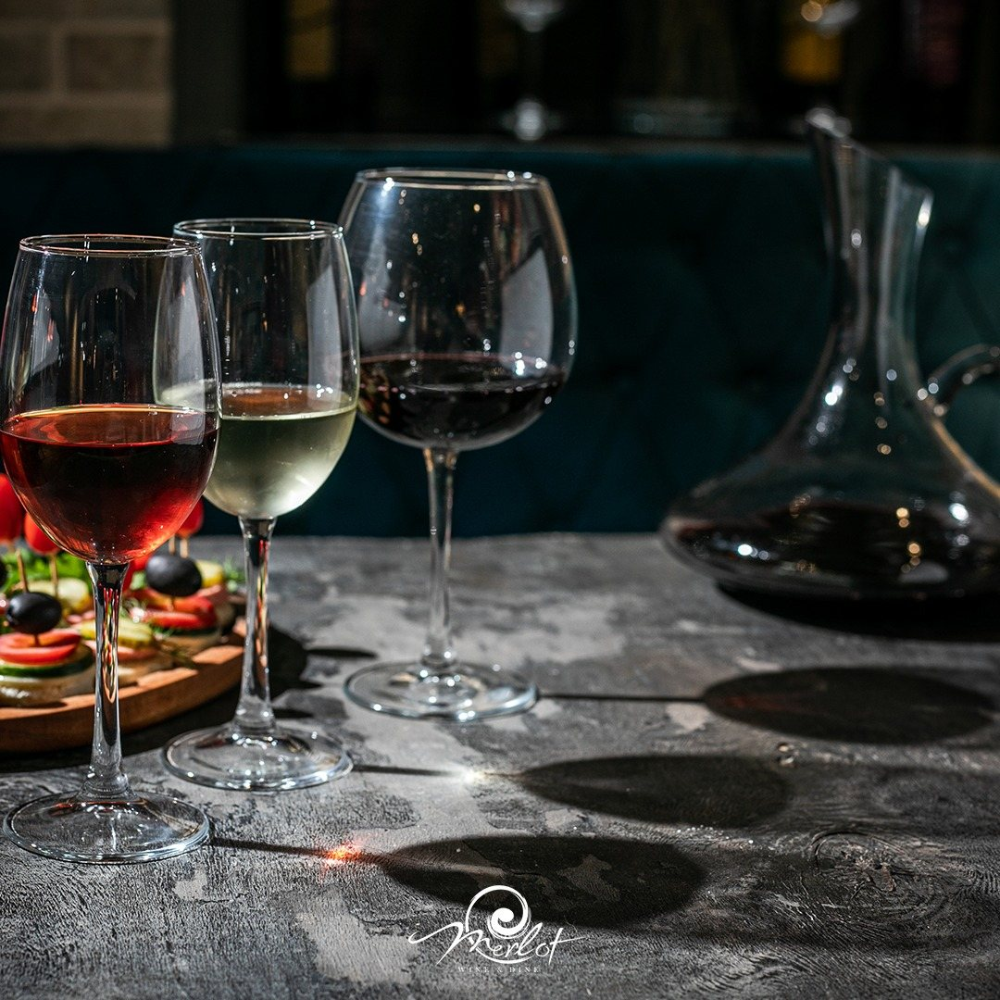
Şərab restoranı · Bəşir Səfəroğlu 161
Səhər qəhvəsi, günorta naharı və axşam bir qədəh şərab — hamısı bir zalda. Həftənin yeddi günü.
Hər gün 08:00 – 00:00
Bura necə yerdir
Adda iki söz var və hər ikisi doğrudur. Wine — Azərbaycan şərablarının siyahısı və üç rəngdə ev şərabı: qırmızı, ağ, çəhrayı. Dine — səhər səkkizdən işləyən mətbəx: səhər yeməyi, nahar və şam yeməyi eyni zalda.
Zal balaca və sakitdir: kərpic tağ, mavi məxmər, ağac və axşama doğru azalan işıq. Rəylərdə buranı ən çox «rahat» adlandırırlar və bir dəfəlik gəlmirlər.
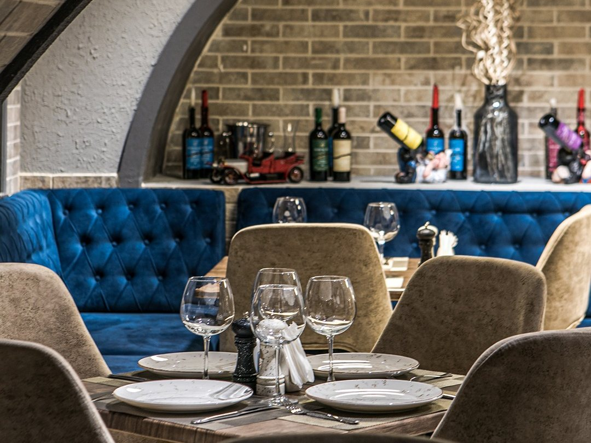
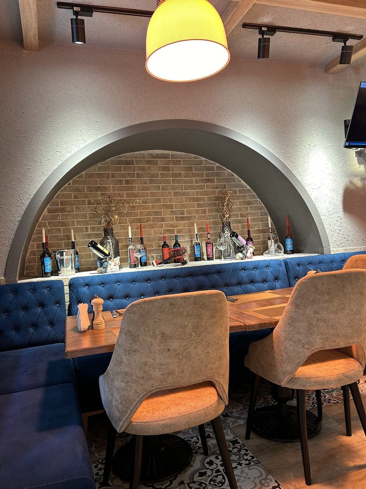
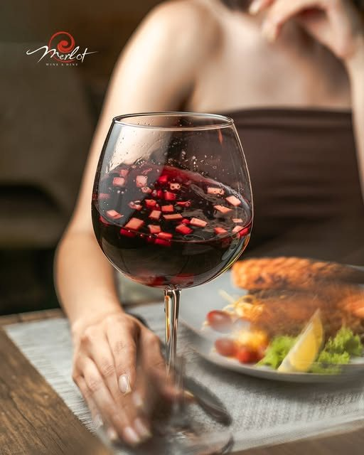
Şərab
Rəylərdə ən çox məhz ondan yazırlar — hər üç rəngi dadmağı məsləhət görürlər. Yanında Azərbaycan şərablarının siyahısı, qırmızıya isə dekanter gətirilir.
Bir qədəh şərab burada mütləq axşam işi deyil. Kimsə qəhvəyə gəlib qədəhlə qalır, kimsə əksinə — zal səhər səkkizdən açıqdır, qalanı qonağın seçimidir.
Masa sifariş etMətbəx
Rəylərdə və restoranın instaqramında ən çox rast gəlinən dörd yemək.

01Pendir çeşidi, dilimlənmiş ət, iki sous
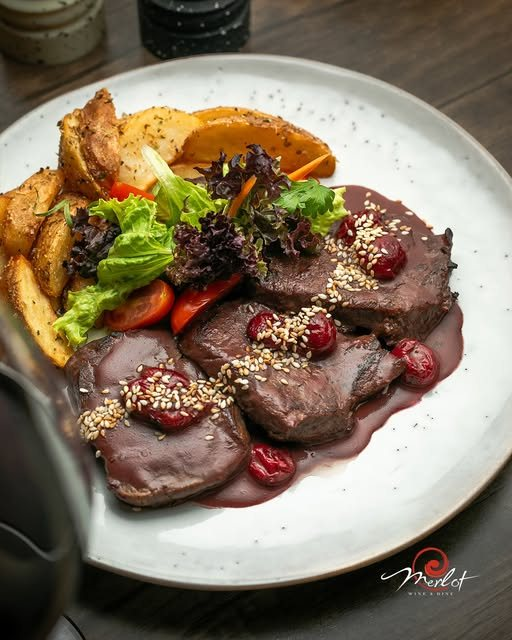
02Şərab-albalı sousu, kartof dilimləri, göyərti
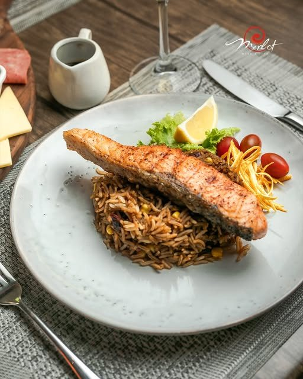
03Ədviyyatlı düyü, limon, çeri pomidor
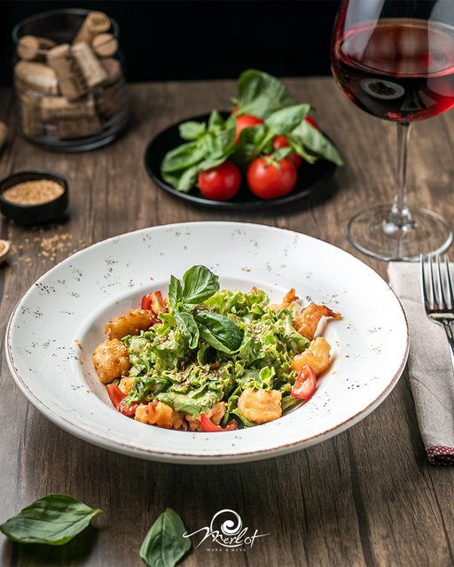
04Yaşıl salat, çeri pomidor, reyhan, küncüt
Qiymətlər saytda bilərəkdən göstərilmir: onları restoran özü aparır və zalda həmişə güncəldir. Orta hesab — adambaşı 10–20 ₼.
Axşamlar
İşıq azalır, barda kokteyllər yığılır, xüsusi axşamlarda isə canlı musiqi olur — kərpic tağın altında gitara və klarnet. Belə axşamların tarixini restoran instaqramda elan edir.
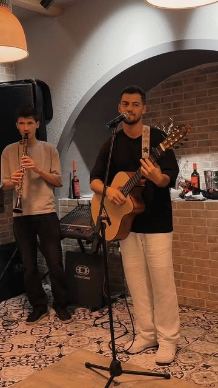
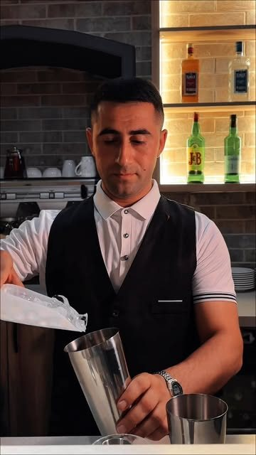
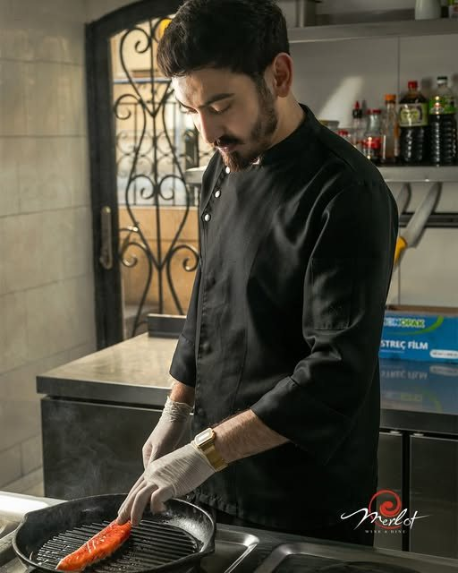
Rəylər
Bütün müddət ərzində beş ulduzdan aşağı bir rəy də yoxdur. Hamısı Google-dadır, orijinala keçid var.
Шикарное место! Очень вкусно готовят, выбирайте домашнее вино, есть белое, красное, розовое, все вкусные и точно останетесь довольны! Демократичный ценник, уютная обстановка, очень приветливый персонал.
Очень понравился этот винный ресторан: современный ремонт, большой выбор азербайджанского вина, хорошо приготовленные блюда, приятные официанты.
Приятное место для вечернего досуга. Спокойная атмосфера, обходительный персонал. Захожу к ним на кофе и бокал вина.
Великолепное соотношение цены и качества! Отличное место, где вкусно и вино по честной цене!
Necə gəlmək